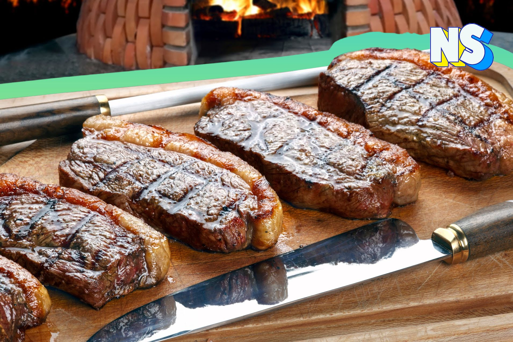

Asado
El asado es un plato típico de la gastronomía argentina, y de otros países de América Latina. Consiste
en carne de vaca, cerdo, cordero, o pollo, asada a la parrilla. Se acompaña con ensaladas, pan, y
bebidas. Es un plato muy sabroso y popular en las reuniones familiares y de amigos.
Churrasco

El churrasco es un plato típico de la gastronomía brasileña, y de otros países de América Latina. Consiste
en carne de vaca, cerdo, cordero, o pollo, asada a la parrilla. Se acompaña con arroz, frijoles,
farofa, y bebidas. Es un plato muy sabroso y popular en las reuniones familiares y de amigos.
Costillas BBQ

Las costillas BBQ son un plato típico de la gastronomía estadounidense, y de otros países del mundo. Consiste
en costillas de cerdo, cocidas a la parrilla, y bañadas en salsa barbacoa. Se acompañan con
ensaladas, pan, y bebidas. Es un plato muy sabroso y popular en las reuniones familiares y de
amigos.